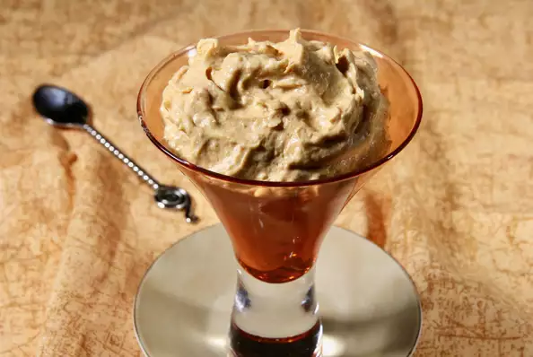

Pumpkin Fluff

Description
Fluffy pumpkin.
Ingredients
- 1 (15 ounce) can pumpkin puree
- 1 (8 ounce) container whipped topping (such as Cool Whip®)
- 1 (3.4 ounce) package instant vanilla pudding mix
- 6 teaspoons white sugar
- ½ teaspoon pumpkin pie spice
- ¼ teaspoon vanilla extract
Steps
- Mix pumpkin, whipped topping, pudding mix, sugar, pumpkin pie spice, and vanilla extract together until blended.